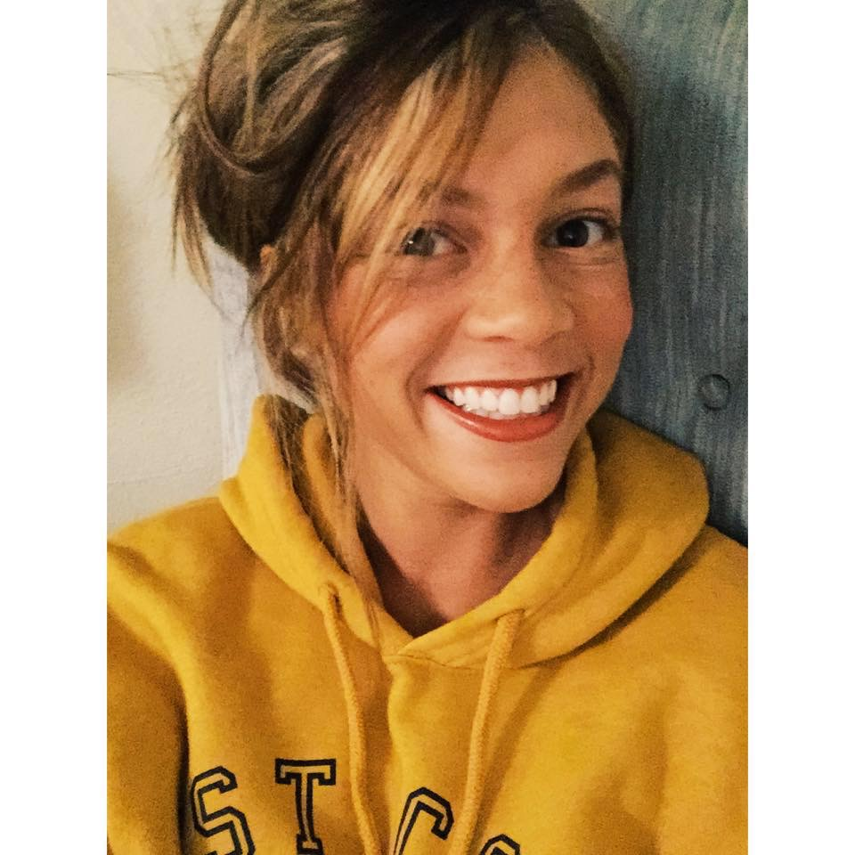

A little bit about me. My name is Sarah Finck and I was born and raised in a small town known
as Peoria, IL which is about five and a half hours north of the KC area. After graduating highschool,
I attended college at Illinois State University in Normal, IL where I was granted a scholarship to
play softball. Four years later I graduated with a Bachelor's of science in Exercise Science and a
Minor in Business Administration. After graduating college, I was quickly ejected into the fitness
field, where I reside today. I recently decided to continue my education through the KU Coding
Bootcamp. I chose this career path because of the financial stability and my love for design. My goal
is to become a front end web developer.
Additional Info.
Some of my hobbies include: working out and taking my dog to Bar K. My dog is an 80 lb bernedoodle
(bernese mountain dog and poodle mix). She definitely keeps me busy! My all time favorite artist and
human is Beyonce, she has inspired me on so many levels. I also love to watch HGTV; I could watch
people flip houses for days. I hope you enjoyed this short blurb about me - follow me on LinkedIn and
GitHub to see my career path and stay up to date on my latest projects!